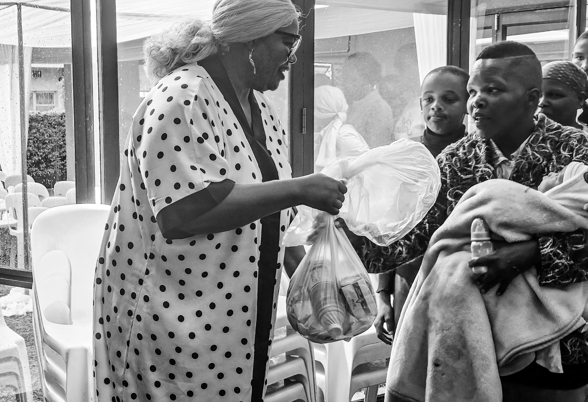
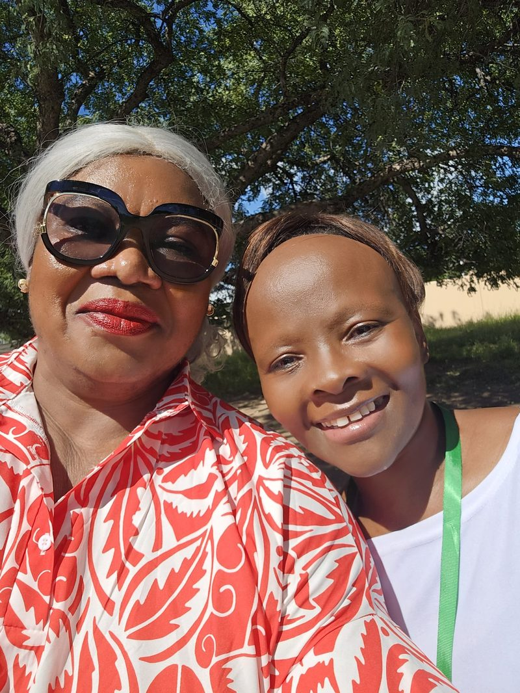
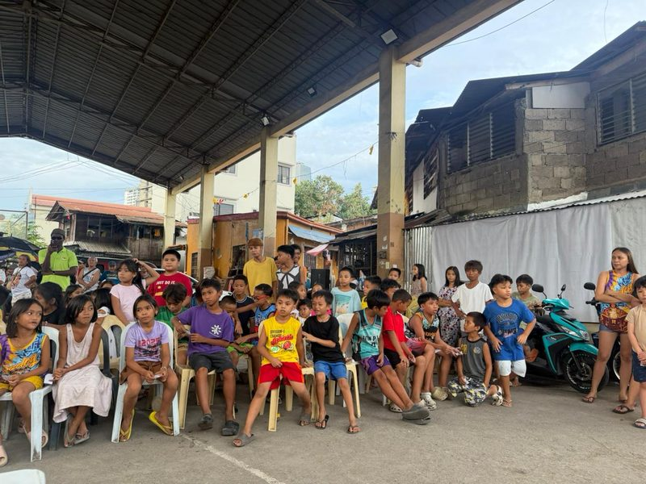
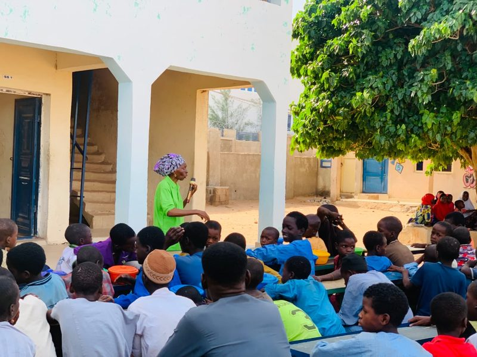

News & Impact
Stories from the field — lives transformed through faith, compassion, and practical action.

From Uncertainty to the Classroom
After losing her father, Grace could not afford school fees. CFI's education fund restored her hope — today she excels in her studies and dreams of becoming a nurse.
Read more →
A New Beginning Through Small Business Support
After her husband's passing, Esther had no steady income. A CFI micro-grant and mentoring helped her launch a tailoring business that now supports her children.
Read more →
Healing Hands: Hospital Bills Covered
When Samuel needed urgent surgery, his family faced impossible hospital bills. CFI's healthcare fund stepped in so he could receive treatment and recover at home.
Read more →
Serving Together at the Crusade Outreach
Volunteers from three nations joined CFI for a crusade outreach — sharing the gospel, distributing food, and welcoming hundreds into fellowship.
Read more →
Shelter Project: A Safe Home at Last
The Okonkwo family lived in a damaged structure for years. CFI's shelter project built a safe, dignified home where their children can sleep without fear.
Read more →